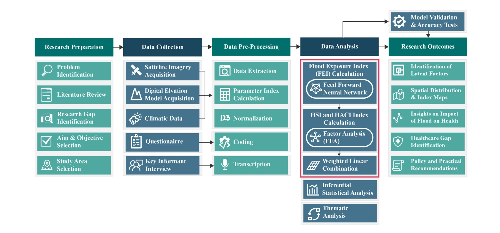
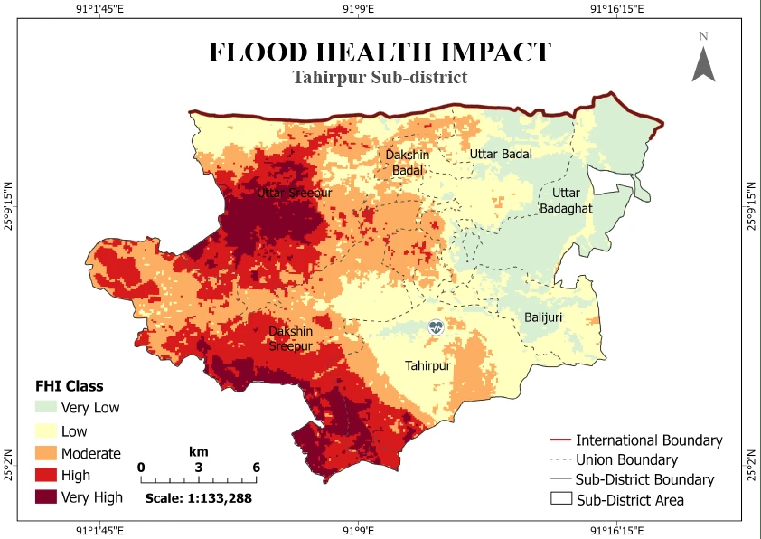
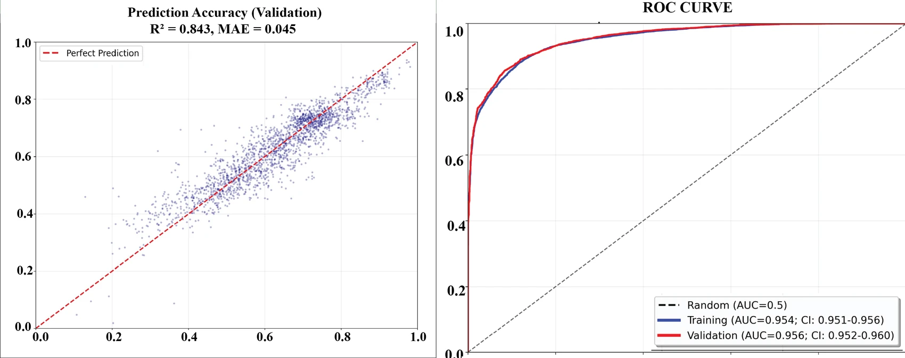
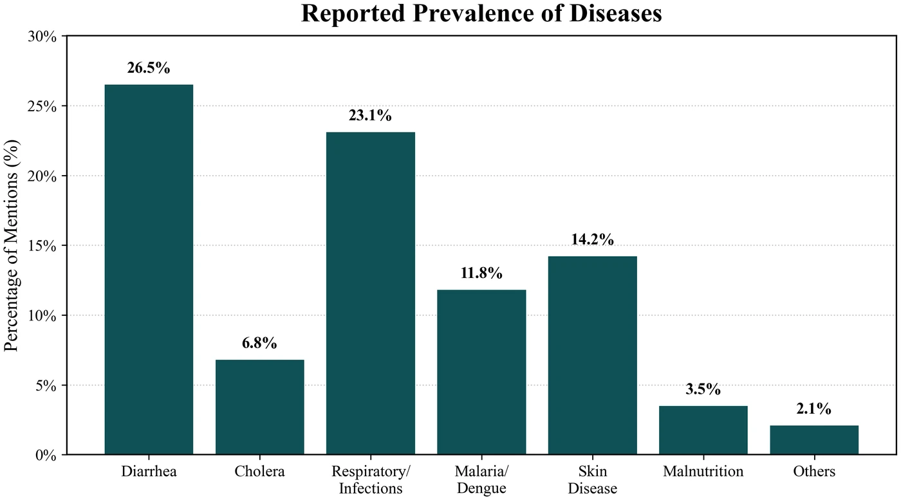
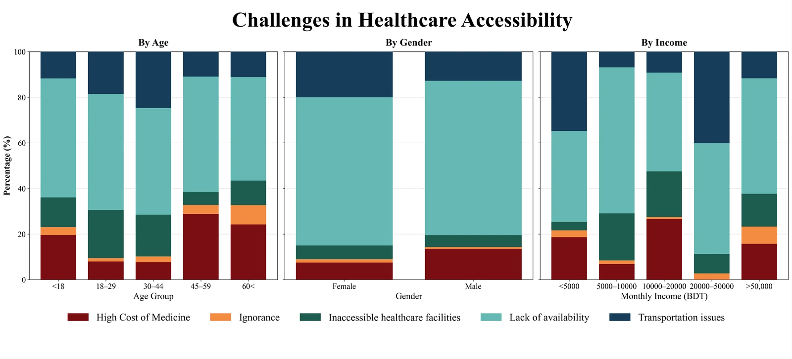

Integrating Deep Learning and GIScience for Flood-Induced Public Health Risk Assessment in Tahirpur Upazila, Sunamganj
A composite Flood Health Impact index that fuses a neural-network flood exposure model with survey-derived health sensitivity and adaptive capacity, mapping where flood exposure, disease burden, and weak health systems compound each other across Bangladesh's haor wetlands.
AuthorsHasan, M. M., Islam, M. A., Basak, R., Sen, S. K., Kabir, M. N., & Terao, T.
Most flood-health studies in Bangladesh treat hazard, social vulnerability, and health outcomes as separate problems. This thesis integrates them: a feed-forward neural network (FFNN) estimates physical flood exposure from seven hydrotopographic and spectral predictors, while a household survey (n=384) run through exploratory factor analysis yields a Health Sensitivity Index (HSI) and a Health Adaptive Capacity Index (HACI). The three are fused multiplicatively, exposure × sensitivity, attenuated by adaptive capacity, following IPCC disaster-risk theory, into a single composite Flood Health Impact (FHI) surface for Tahirpur Upazila, Sunamganj.
The exposure model was independently corroborated against Sentinel-1 SAR-observed inundation from the 2022 Sunamganj flood (AUC = 0.82), rather than validated only against its own training data, and the composite index was cross-checked against respondents' self-reported post-flood disease burden.

Fig. 1: The five-stage research framework linking satellite and survey data collection through to the composite risk index and its policy outcomes.
Key Findings
The exposure model validates against independent flood data, not just its own training set. The FFNN explained 84.3% of variance in the flood-susceptibility reference (R² = 0.843) and separately scored AUC = 0.82 against real Sentinel-1 SAR-observed inundation from the 2022 Sunamganj flood, confirming genuine flood-driven discrimination rather than a training artefact. Elevation and water-related spectral indices (NDWI, NDVI) were the dominant predictors.
Risk is sharply concentrated, not evenly spread. Dakshin Sreepur and Uttar Sreepur are basin-floor hotspots, with 48.86% and 46.77% of their area respectively falling in the high-to-very-high FHI classes, while Uttar Badaghat, on higher, better-drained ground, remains 84.67% low-risk.
Women carry disproportionately higher composite risk despite similar physical exposure. Female respondents showed markedly lower adaptive capacity (median HACI 0.36 vs. 0.43 for men) and higher composite risk (median FHI 0.36 vs. 0.29), even though health sensitivity itself did not differ significantly by gender.
Risk peaks in the lower-middle-income band, not the poorest. Both health sensitivity and composite risk peaked among households earning 10,000–20,000 BDT/month rather than declining monotonically with income, a paradoxical exposure window invisible to single-domain assessments.
Healthcare-access barriers are structural, not behavioural. Lack of service availability (37.7%) and transport interruptions (22.3%) dominated over cost and awareness; ignorance toward health risks accounted for just 2.7% of reported barriers, meaning infrastructure and service continuity, not public awareness campaigns, are the binding constraint during floods.
Disease burden is dominated by water and vectors. Diarrhea (26.5%) and respiratory infection (23.1%) were the most-reported conditions; water- and vector-borne disease collectively accounted for 45.1% of cases, directly implicating WASH failure as the primary flood-health pathway.

Fig. 2: Composite Flood Health Impact index across Tahirpur's seven unions, reclassified into five risk categories by natural breaks.

Fig. 3: FFNN validation, prediction accuracy against the held-out reference layer and ROC discrimination on training vs. validation partitions.

Fig. 4: Reported prevalence of flood-associated disease across surveyed households, water- and vector-borne conditions dominate.

Fig. 5: Healthcare-access barriers by age, gender, and income, supply-side constraints outweigh cost and awareness in every group.
Why It Matters
The findings point toward targeted, locally led interventions rather than generic flood response: surge-ready primary care and resilient WASH infrastructure in the Sreepur hotspots, telemedicine and community health workers reaching women specifically, and financial-inclusion support aimed at the lower-middle-income band rather than only the poorest. Because the framework is validated against independent satellite observation as well as self-reported outcomes, it is built to transfer to other haor, deltaic, and riverine settings facing the same compounding of physical exposure, health sensitivity, and thin adaptive capacity.
This page summarizes the thesis's key methodology and findings. The full manuscript, complete methodology, questionnaire items, and additional figures (feature-importance rankings, indicator correlation network, and demographic-disparity statistics) are available on request — get in touch.